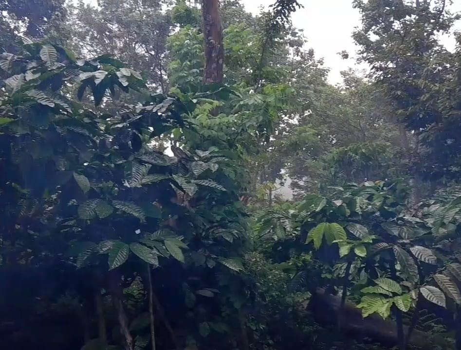

SEJARAH
Kopi Sangah Asli Barokah didirikan pada tahun 2017 di Desa Rempek Darussalam, Kecamatan Gangga, Kabupaten Lombok Utara. Kopi ini dikenal dengan kualitasnya yang tinggi dan proses pengolahan yang tetap mempertahankan metode tradisional. Hal ini menjadikan Kopi Barokah salah satu kopi favorit di daerah tersebut. Setiap biji kopi robusta pilihan dipanen langsung dari Bukit Rempek Darussalam dan diolah dengan hati-hati untuk menjaga cita rasa yang khas dan autentik.